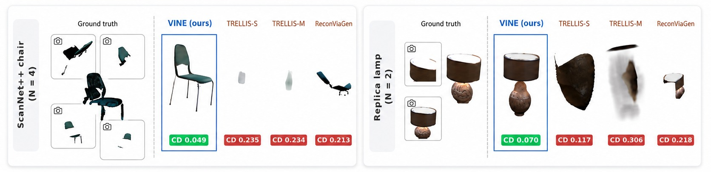
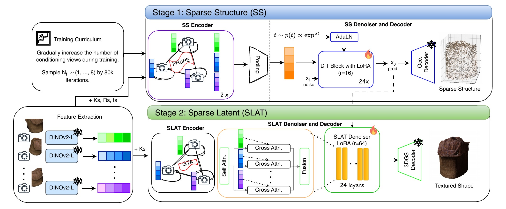

Technical University of Munich

Image-to-3D models produce compelling shapes from a single image but hallucinate unobserved regions. When an object is captured from several viewpoints with partial observability, these hallucinations contradict the other views. Extending such models from single- to multi-view input is non-trivial: the number of views varies per capture, and partial observations cover disjoint regions, for which naive aggregation is insufficient to compose complementary evidence. We present VINE, a lightweight multi-view extension of a two-stage rectified-flow model for structured 3D latent generation. VINE introduces a multi-view encoder that processes an arbitrary number of posed images, encoding the full camera frustum as relative positional biases for geometrically consistent cross-view aggregation. The generation stages receive deliberately different conditioning: geometry relies on cross-view exchange to resolve shape from partial evidence, while texture preserves per-view detail and gains little from such exchange. We adapt the frozen denoiser with LoRA and a curriculum that gradually increases the number of input views, training on a single H100 with 16K instances. Because input poses are supplied by the capture system, VINE conditions on them directly rather than estimating them from sparse cross-view correspondence. Under a partial-observation evaluation protocol on Toys4K and OmniObject3D, VINE surpasses tuning-free single-view TRELLIS adaptations. Our model matches depth-conditioned methods on geometry while significantly improving rendered texture, using posed images alone, and extends to sparse-view scene reconstruction, where it significantly improves geometry over depth-conditioned baselines on ScanNet++.
VINE extends the two-stage TRELLIS image-to-3D model to an arbitrary number of posed views. Per-view DINOv2 features pass through a lightweight multi-view encoder with camera-aware attention and condition the frozen denoisers through LoRA adapters.

Full attention over all views' tokens, with intrinsics and extrinsics injected as relative projective transforms (PRoPE), lets the model relate patches across views geometrically. It takes any number of views.
Geometry depends on cross-view exchange to resolve occupancy from partial evidence. Texture depends on keeping each view's tokens intact, because pooling blurs view-specific appearance.
The 1.2B-parameter backbone stays frozen. LoRA plus the encoder train 5–7% of each denoiser's parameters, on a single H100 with 16K instances. A curriculum raises the number of input views from 1 to 8.
Standard image-to-3D benchmarks condition on views that cover the full object. In that setting, a model that hallucinates well cannot be told apart from one that reconstructs faithfully. We instead select, from a 24-camera pool, the N ∈ {1, 2, 4, 8} views that minimize coverage. Each view on its own sees only 72–87% of the object silhouette, but by N = 4 the views together cover nearly all of it. Method rankings under this protocol are anti-correlated with rankings under a full-coverage protocol on the same instances, so it measures something that standard benchmarks miss: whether a model fuses complementary evidence.
Every clip is a 360° orbit around a reconstructed 3D model, and the clips in each row play in sync. The leftmost column shows the posed input views that every method receives. Videos load as you scroll.
Partial-view Toys4K benchmark (200 instances), averaged over N ∈ {1, 2, 4, 8}. SAM3D variants also receive a metric depth estimate, while VINE uses posed RGB images only. Per-N results and significance tests are in the paper.
| Toys4K | |||
|---|---|---|---|
| Method | CD×100 ↓ | F@.02 ↑ | PSNR ↑ |
| Amodal3R | 4.74 | 0.408 | 12.40 |
| ReconViaGen | 7.11 | 0.313 | 16.42 |
| TRELLIS-S | 5.75 | 0.397 | 16.86 |
| TRELLIS-M | 5.45 | 0.413 | 17.12 |
| SAM3D-M | 3.06 | 0.544 | 18.28 |
| SAM3D-S | 3.07 | 0.541 | 18.21 |
| MV-SAM3D | 3.38 | 0.544 | 18.11 |
| VINE (ours) | 3.09 | 0.563 | 18.45 |
Object reconstruction in real scenes from the DP-Recon benchmarks, after multi-start ICP with isotropic scale alignment. MV-SAM3D* uses its own predicted pose.
| Replica | ScanNet++ | |||
|---|---|---|---|---|
| Method | CD×100 ↓ | F@.05 ↑ | CD×100 ↓ | F@.05 ↑ |
| MV-SAM3D* | 62.13 | 0.057 | 62.00 | 0.061 |
| TRELLIS-M | 9.26 | 0.533 | 7.58 | 0.620 |
| ReconViaGen | 6.36 | 0.604 | 5.89 | 0.627 |
| SAM3D-M | 5.24 | 0.651 | 4.62 | 0.676 |
| MV-SAM3D + ICP | 4.79 | 0.689 | 4.69 | 0.671 |
| VINE (ours) | 4.40 | 0.710 | 3.89 | 0.695 |
@misc{gladkova2026vine,
title = {{VINE}: Variable Input N-view Encoder for 3D Generation from Partial Posed Observations},
author = {Gladkova, Mariia and Cremers, Daniel},
year = {2026}
}